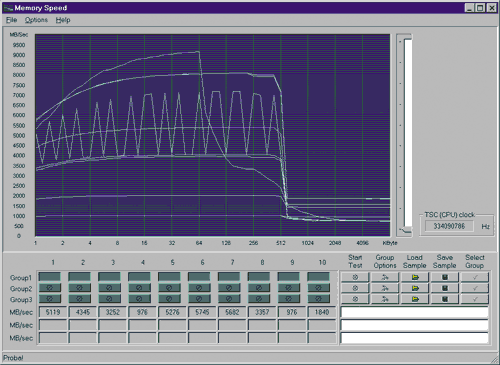
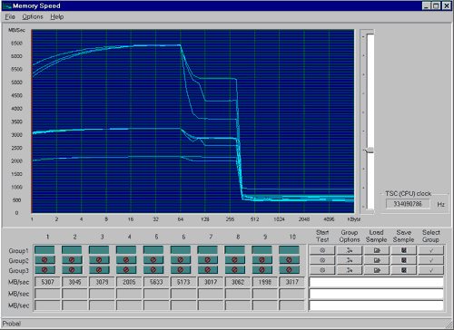
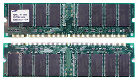
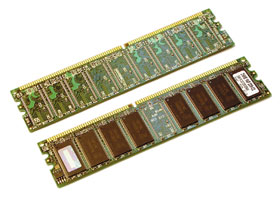
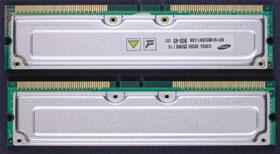

Олег Денисов, Сергей Назаров
Еще летом прошлого года цены на память для ПК служили прекрасным ориентиром, точно соответствуя ее производительности: обычная SDRAM-память - для дешевых компьютеров начального уровня, DDR SDRAM - для машин побыстрее и подороже, а RDRAM - только для самых мощных и дорогих систем. Но в результате резкого роста цен на SDRAM-память, начавшегося осенью, сегодня ОЗУ всех трех типов различаются в стоимости весьма незначительно, что затрудняет выбор и влечет за собой вполне резонный вопрос: "А стоит ли экономить, покупая более дешевую и медленную память?".
Скачок цен для многих обернулся еще одной проблемой - наращивание емкости ОЗУ стало дорогим удовольствием. Так, если раньше 256 Мбайт PC133 SDRAM-памяти стоили всего 30 долл. и можно было, не задумываясь, установить такой объем памяти (или даже 512 Мбайт) в ПК с запасом на будущее, то сейчас эти 256 Мбайт обойдутся примерно в 70 долл. (табл. 1). Поэтому приходится оценивать оптимальный объем ОЗУ: если поставить меньше - система будет работать медленно, больше - часть системной памяти будет простаивать, не оправдывая затрат на ее покупку.
Таким образом, сегодня вопрос о выборе типа ОЗУ и его объема оказался весьма актуальным.
Таблица 1. Стоимость модулей памяти, долл.
| Тип модуля | 128 Мбайт | 256 Мбайт | 512 Мбайт |
| PC133 DIMM | 42 | 72 | 150 |
| DDR266 DIMM | 42 | 80 | 170 |
| DDR333 DIMM | Нет в продаже | 95 | 185 |
| PC800 RIMM | 44 | 86 | 170 |
| Примечание: средние цены модулей памяти без ECC производства Samsung Electronics на конец марта 2002 г.; для PC800 RIMM приведена стоимость комплекта из двух модулей (например, 128 Мбайт = 2х64 Мбайт). | |||
Методика тестированияПрограмма испытаний при подготовке этого обзора состояла из трех частей. В первой части выполнялись тесты из стандартных тестовых пакетов, во второй - тесты на скорость работы реальных приложений, в третьей - специализированные тесты для испытания подсистемы памяти. В первую часть вошли тесты из пакета ZD Content Creation Winstone 2002 1.0, предназначенные для измерения общей производительности ПК при работе с популярными мультимедийными программами; 3D-тесты из пакета MadOnion 3DMark2001; тесты на скорость работы подсистемы оперативной памяти из пакета SiSoft Sandra Standard 2002.1.8.59; тесты из пакета SPEC CPU2000, предназначенного для проверки быстродействия процессора и ОЗУ. Все они выполнялись при видеорежиме с разрешением 1280x1024 точек, глубине цвета 32 бита и частоте кадровой развертки 75 Гц. Вторая часть испытаний была предназначена для проверки скорости работы с современными приложениями. В нее вошли:
В третьей части выполнялись тесты из пакетов STREAM и MemSpeed и ряд дополнительных тестов, в которых измерялась скорость передачи данных по шине памяти и проверялась ее зависимость от типа используемых данных, типа операций над данными, типа применяемых процессорных инструкций и степени оптимизации работы процессора с ОЗУ. Все тесты выполнялись под управлением ОС Windows XP Professional Build 2600. Мы использовали следующее стендовое оборудование: процессоры AMD Athlon XP 1900+ (тактовая частота ядра 1,6 ГГц), Intel Pentium 4 2,0 ГГц (L2-кэш 512 Кбайт), Pentium III Tualatin 1,13 ГГц (L2-кэш 256 Кбайт), Pentium III Coppermine 1,0 ГГц; системные платы ASUS A7V266-E (набор микросхем VIA Apollo KT266A), ASUS P4B (Intel 845), ASUS TUSL2-C (Intel 815E B0 Stepping), ECS K7S5A (SiS735), Gigabyte GA-8IRX (Intel 845D), MSI 645 Ultra (MS-6547) (SiS645), MSI 850 Pro5 (MS-6545) (Intel 850), Soltek SL-85DRV3 (VIA Apollo P4X266A); модули памяти PC133, DDR266, DDR333 SDRAM емкостью 128, 256, 512 Мбайт (память PC100 и DDR200 моделировалась путем снижения физической частоты тактирования до 100 МГц) и PC800 RDRAM емкостью 64, 128 и 256 Мбайт, графический адаптер ASUS AGP-V8200 на наборе микросхем NVIDIA GeForce3 с 64 Мбайт видеопамяти, жесткий диск Fujitsu MPG3204AH емкостью 20,4 Гбайт. |
MemSpeed
Программа MemSpeed создана российским программистом Дмитрием Кузнецовым (d.a.smith@mtu-net.ru) и предназначена для измерения производительности ОЗУ. Оригинальность ее в том, что основные модули программы, исходные тексты которых можно просмотреть средствами пользовательского интерфейса, написаны на языке низкого уровня Ассемблер, что позволяет наиболее объективно оценить реальную скорость передачи данных по шине памяти в зависимости от типа используемых данных и процессорных инструкций.
Перед запуском тестов пользователь может вручную задать тип данных, команды пересылки данных, цикла и операции.
Среди возможных типов данных самый простой - Byte [al] ("один байт"). Если указать его в настройках MemSpeed, то "квант" информации будет принят равным одному байту и при выполнении какой-либо операции будет обрабатываться ровно один байт данных. Следующий по сложности тип данных - Word [ax] ("слово", размер 2 байта). За ним идут DWord [eax] ("двойное слово", 4 байта) и QWord [mmx] ("четверное слово", 8 байт). В квадратных скобках здесь указаны названия регистров процессора, которые используются как источники или приемники данных при выполнении операций пересылки. Заметим, что данные типа BYTE, WORD и DWORD обрабатываются с помощью стандартных 32-разрядных регистров и инструкций, в то время как QWORD - с помощью 64-разрядных MMX-регистров и MMX-инструкций.
Суть работы MemSpeed заключается, собственно, в пересылке данных из процессорного регистра в оперативную память (запись данных в ОЗУ) и наоборот (чтение из ОЗУ). Для выполнения непосредственно этих операций в программе могут использоваться инструкции MOV или STOS/LODS.
MOV - это элементарная ассемблерная команда пересылки данных. При выполнении с ее помощью операции записи в ОЗУ исходные данные из одного 32-разрядного регистра процессора перемещаются по адресу, значение которого хранится в другом 32-разрядном регистре. А при чтении из ОЗУ, наоборот, исходные данные, размещенные по адресу, хранящемуся в одном 32-разрядном регистре, перемещаются в другой 32-разрядный регистр.
STOS/LODS - более сложные команды записи/чтения данных, которые отличаются от MOV тем, что после пересылки данных значение адресного регистра автоматически увеличивается или уменьшается на размер пересылаемых данных. STOS/LODS - это стандартные инструкции процессора, предназначенные для работы с 8-, 16- и 32-разрядными данными. К сожалению, эти команды не работают с MMX-регистрами и не поддерживают данные типа QWORD.
Циклическое выполнение команд пересылки данных реализуется в MemSpeed несколькими способами. При передаче данных с помощью команды MOV программный цикл можно организовать двояко. Первый способ (обозначается "DEC; JNZ") - хранить счетчик цикла в каком-либо регистре процессора, присвоив ему первоначально значение, указывающее, сколько раз исполняется цикл, и каждый раз после выполнения команды пересылки данных уменьшать его значение на единицу (с помощью инструкции DEC reg) и переходить в начало цикла (инструкция JNZ). Второй способ (LOOP) - вместо двух элементарных использовать одну комбинированную инструкцию LOOP, которая автоматически уменьшает значение счетчика цикла на единицу после выполнения его тела и выполняет переход в начало цикла.
Если для передачи данных применяются команды STOS/LODS, то программный цикл можно организовать и еще одним способом (REP-prefix) - с помощью префикса REP. Этот префикс "заставляет" процессор циклически выполнять команду STOS/LODS, автоматически уменьшая значение счетчика цикла вплоть до его обнуления.
И, наконец, последний параметр, задаваемый пользователем, - тип операции: Write (запись исходных данных в оперативную память) или Read ()чтение из нее).
В ходе выполнения теста MemSpeed работает следующим образом. Сначала программа назначает выровненную по началу страницы (4 Кбайт) область системной памяти размером 8 Мбайт, в самом начале которой выделяется тестируемый участок объемом 1 Кбайт. После этого MemSpeed последовательно и циклически записывает в этот тестируемый участок данные из регистра процессора и делает это до тех пор, пока содержимое выбранного участка не будет полностью переписано (если в настройках указан тип операции Write). Если задан тип операции Read, то, наоборот, MemSpeed считывает данные из памяти в регистр. Для накопления статистики этот процесс многократно повторяется, после чего рассчитывается скорость записи/чтения данных в системную память и из нее.
Затем размер тестируемого участка памяти увеличивается до 2, 4, 8, 16 Кбайт и т. д. (вплоть до 8 Мбайт), и для каждого значения все операции проделываются заново. По полученным данным программа строит зависимость скорости линейной записи/чтения данных от размера тестируемого участка системной памяти, после чего переходит к выполнению теста с другим набором настроек (всего их в MemSpeed можно задать до 10).
При тестировании участков памяти, размер которых не превышает объем L1-кэша процессора, все обрабатываемые данные помещаются внутри этого кэша, а программа в этом случае измеряет скорость работы процессора с собственной кэш-памятью 1-го уровня. Отметим, что максимальные значения, которые были получены для использовавшихся при тестировании процессоров, составляют: для Intel Pentium 4 2,0 ГГц - 9,1; Intel Pentium III Tualatin 1,13 ГГц - 6,4; AMD Athlon XP 1900+ - 6,4 Гбайт/с.
Если тестируемый участок немного выходит за пределы L1-кэша, то часть данных размещается в L2-кэше. И если последний работает медленнее L1-кэша, то скорость передачи данных начинает снижаться и стабилизируется при объеме тестируемого участка, равном двукратной емкости L1-кэша, поскольку в этом случае обращение к данным практически всегда будет происходить через L2-кэш. Это приводит к резкому снижению скорости передачи данных при операциях всех типов в случае AMD Athlon XP - например, при увеличении размера тестируемого участка с 64 до 128 Кбайт у Athlon XP 1900+ скорость падает с 6,4 до 5,1 Гбайт/с (приведены максимальные значения). А вот с процессорами Intel Pentium 4 и Pentium III такого эффекта не наблюдается, поскольку L1- и L2-кэши у них работают одинаково эффективно.
Аналогично, как только тестируемый участок выходит за пределы L2-кэша, скорость передачи данных начинает резко падать при всех операциях и в значительной степени стабилизируется уже при двукратном, а полностью - при четырехкратном увеличении объема тестируемой памяти.
| Скорость записи/чтения данных в тесте MemSpeed |
|  |
| a: процессор Intel Pentium 4 2,0 ГГц (L2-кэш 512 Кбайт) с памятью PC800 RDRAM
|
|  |
| b: AMD Athlon XP 1900+ с памятью DDR266 SDRAM.
|
STREAM
STREAM - это многоплатформная система синтетических тестов для измерения производительности ОЗУ и процессоров одно/многопроцессорных компьютеров, первоначально написанная на языке Fortran-77, а позже "портированная" на C и распространяемая бесплатно в виде исходных текстов или исполняемого кода под операционные системы MS-DOS, Windows, Linux и Mac OS. Кстати, благодаря свободному доступу к исходным кодам, эта программа стала популярной, и ее широко используют для тестирования машин самого разного класса - от дешевых ПК до супермощных компьютеров.
STREAM состоит из четырех тестов (Copy, Scale, Sum, Triad), которые работают с массивами 64-разрядных вещественных чисел двойной точности (a, b, c) и производят над их элементами операции чтения/записи и арифметические операции сложения/умножения.
Copy. Копирование массива (чтение массива b и запись его в массив a). Реализуется путем циклического выполнения выражения a(i) = b(i). Тест измеряет скорость передачи данных в памяти "в чистом виде", поскольку во время его выполнения процессор "занимается" только перекачкой данных из одной области памяти в другую и не производит над ними никаких других операций. По объему вычислений это самый простой тест из четырех.
Scale. Скалярное умножение массива a(i) = q*b(i), где q - константа. Немного усложненный вариант предыдущего теста - добавлена арифметическая операция умножения, вследствие чего возрастает нагрузка на FPU-блок процессора.
Sum. Сложение двух массивов a(i) = b(i) + c(i). Тест на скорость параллельного выполнения нескольких операций чтения/записи данных в памяти и арифметической операции сложения.
Triad. Скалярное умножение и сложение массивов a(i) = b(i) + q*c(i). Тест на скорость параллельного выполнения нескольких операций чтения/записи и умножения/сложения. Это самый сложный тест из четырех по объему вычислений; от предыдущего отличается добавившейся операцией умножения.
Заметим, что массивы в STREAM размещаются за пределами кэш-памяти процессора, а код программы написан так, что повторное обращение к ранее считанным из памяти данным исключается. Все это делается с единственной целью - измерить производительность ОЗУ, а не кэш-памяти процессора. Поэтому STREAM очень хорошо подходит для оценки реальной скорости работы с ОЗУ приложений, оперирующих большими массивами данных.
Безусловно, они зависят от производительности не только ОЗУ, но и процессора, поскольку именно он "занимается" перемещением данных в памяти. Поэтому, например, результаты этих тестов для памяти PC133 SDRAM на процессоре Pentium 4 2,0 ГГц были в 1,8-2,1 раза выше, чем в случае Pentium III Coppermine 1,0 ГГц.
Кроме того, тесты STREAM наглядно продемонстрировали, что при сегодняшнем положении дел узкое место при векторной обработке (т. е. скалярном умножении и сложении) больших массивов данных - процессор, а не ОЗУ. Это следует из того, что по мере усложнения тестов от Copy до Triad и увеличения нагрузки на процессор скорость обработки данных в рамках одной платформы изменялась незначительно - в пределах 5-15%.
Таблица 3. Результаты тестов из пакета STREAM
| Тип ОЗУ | Набор микросхем | Скорость, Мбайт/с | |||
| Copy | Scale | Add | Triad | ||
| Процессор Intel Pentium 4 2,0 ГГц, L2-кэш 512 Кбайт | |||||
| PC133 SDRAM | Intel 845 | 598 | 570 | 636 | 634 |
| DDR266 SDRAM | Intel 845D | 933 | 860 | 989 | 978 |
| DDR266 SDRAM | SiS645 | 1019 | 976 | 1025 | 1025 |
| DDR333 SDRAM | SiS645 | 1091 | 1048 | 1159 | 1145 |
| PC800 RDRAM | Intel 850 | 1469 | 1474 | 1578 | 1571 |
| Процессор Intel Pentium III Coppermine 1,0 ГГц, L2-кэш 256 Кбайт | |||||
| PC133 SDRAM | Intel 815E B0 Stepping | 313 | 322 | 346 | 306 |
| Процессор AMD Athlon XP 1900+ | |||||
| DDR266 SDRAM | VIA Apollo KT266A | 790 | 720 | 796 | 780 |
| Примечание: все тесты выполнены при объеме ОЗУ в 256 Мбайт. | |||||
SiSoft Sandra
В состав многофункционального тестового пакета SiSoft Sandra Standard 2002 входят два теста - RAM Int Buffered и RAM Float Buffered, измеряющие скорость передачи данных по шине памяти при работе соответственно с 64-разрядными целыми и вещественными числами.
Первоначально тесты ОЗУ из состава Sandra базировались на пакете STREAM, однако со временем эти программы все сильнее расходились. Текущая версия тестов памяти Sandra отличается от STREAM динамическим характером обращения к ОЗУ и использованием значительной части системной памяти - до 40-60% (STREAM работает со статическими массивами небольшого объема), поддержкой многопоточности (multi-threading) при выполнении тестов на многопроцессорных машинах (по одному потоку на каждый процессор), лучшим распараллеливанием выполнения процессорных инструкций и, наконец, использованием расширенных наборов инструкций (SSE2 - для Pentium 4, SSE - для Pentium III/Celeron, MMX/SSE - для Athlon XP/Athlon/Morgan/Duron, MMX - для остальных x86-процессоров, работающих с ММX-инструкциями) и оптимизацией исполняемого кода под конкретный тип процессора с использованием техники упреждающей загрузки данных из памяти (prefetching) при их чтении из ОЗУ и передаче в процессор для дальнейшей обработки, а также записи данных из процессора напрямую в ОЗУ, минуя кэш-память (cache bypassing).
Рекомендации по оптимизации работы современных процессоров с ОЗУ, примененные в трех последних случаях (расширенные наборы инструкций, упреждающая загрузка, запись в обход кэша), можно найти в соответствующих руководствах AMD (AMD Athlon Processor. x86 Code Optimization Guide) и Intel (Intel Pentium 4 and Intel Xeon Processor Optimization. Reference Manual, Intel Architecture Optimization. Reference Manual), причем здесь они реализованы настолько эффективно, что из всех использованных нами тестов в Sandra наблюдалась самая высокая скорость передачи данных по шине памяти DDR266/DDR333 SDRAM (2,0/2,3 Гбайт/с) и PC800 RDRAM (2,5 Гбайт/с). Однако эти цифры не могут служить оценкой производительности ОЗУ при работе с реальными приложениями - в действительности она ниже (к этому вопросу мы еще вернемся).
Дополнительные тесты и классификация режимов оптимизации ОЗУ
Сравнивая максимальную скорость передачи данных по шине памяти в STREAM, Sandra и MemSpeed (табл. 2-4), нетрудно заметить, что результаты этих трех тестов сильно различаются. Так, на платформе Intel Pentium 4 2,0 ГГц производительность памяти DDR266/DDR333 SDRAM/PC800 RDRAM в STREAM достигает 1,0/1,1/1,5 Гбайт/с, в Sandra - 2,0/2,3/2,5 Гбайт/с, в MemSpeed - 1,9/1,9/1,9 Гбайт/с, а для AMD Athlon XP 1900+ в сочетании с памятью DDR266 SDRAM - соответствующие показатели в трех тестах составляют 0,8, 2,0 и 0,9 Гбайт/с. Значительный разрыв между результатами схожих по своей идеологии тестов побудил нас попытаться выяснить причину этого расхождения.
Сначала была написана простая программа на языке C, копирующая "в лоб" большой массив 64-разрядных вещественных чисел типа double (a(i) = b(i)) и аналогичная тесту Copy в STREAM. Ее исполняемый код был сгенерирован компилятором Intel C++ без оптимизации под какой-либо расширенный набор инструкций и запущен на платформе Intel Pentium 4 2,0 ГГц с памятью PC800 RDRAM. В итоге мы получили скорость передачи данных 1482 Мбайт/с, что практически совпадает с результатом теста Copy из STREAM - 1469 Мбайт/с.
После этого текст программы был переписан заново с применением той же техники оптимизации кода, организующего обмен данными между процессором и ОЗУ, что в Sandra, в соответствии с рекомендациями руководств Intel Pentium 4 and Intel Xeon Processor Optimization. Reference Manual (текущая версия этого документа была доступна в виде PDF-файла 24896606.pdf; использовались примеры программного кода со с. 6 -- 39 - 6 -- 41) и Intel Architecture Optimization. Reference Manual" (24512701.pdf, с. 6 -- 28 - 6 -- 30) и поочередно скомпилирован с "включенными" SSE- и SSE2-инструкциями. В результате скорость выросла почти на 30% и при использовании SSE/SSE2 составила 1892/1863 Мбайт/с - как видно, разницы в производительности между SSE и SSE2 в данном случае нет. Снова заметим, что полученные цифры практически совпали со скоростью передачи данных в тесте MemSpeed с установками QWord [mmx]/MOV/DEC; JNZ/Read - 1863 Мбайт/с.
Таким образом, скорость передачи данных по шине памяти на платформе Intel Pentium 4 2,0 ГГц и PC800 RDRAM равна 1,5 Гбайт/с без оптимизации и возрастает до 1,9 Гбайт/с при оптимизации алгоритмов чтения/записи и использовании SSE/SSE2. Поэтому при оценке скорости работы реальных приложений с ОЗУ следует ориентироваться на цифру 1,5 Гбайт/с, так как в подавляющем большинстве случаев при разработке ПО вопросу оптимизации работы процессора с системной памятью не уделяется вообще никакого внимания. В то же время, если производительность ОЗУ важна, то, скажем, в случае Intel Pentium 4, приложив некоторые усилия, ее можно поднять примерно на 30%.
Что же касается показателей Sandra, то они, безусловно, впечатляют, однако, на наш взгляд, не годятся для оценки реальной скорости работы ОЗУ, поскольку столь высокие значения были получены, скорее всего, благодаря более глубокой проработке и тонкой настройке стандартных механизмов оптимизации работы Intel Pentium 4 с системной памятью и, возможно, использованию искусственных приемов ускорения работы кэш-памяти (причина такого "шустрого" поведения Sandra осталась до конца невыясненной, так как исходные тексты этого ПО недоступны). По нашему мнению, на практике при создании ПО вряд ли возможно достичь такой скорости работы с ОЗУ. С другой стороны, результаты Sandra можно и должно использовать для оценки производительности ОЗУ в режиме максимальной оптимизации под процессор конкретного типа.
Результаты дополнительных тестов ценны еще и тем, что позволяют провести классификацию режимов оптимизации работы процессора с ОЗУ и более осознанно оперировать показателями выполненных тестов. Так, в STREAM какая-либо оптимизация отсутствует (что понятно сразу же после беглого анализа исходных текстов пакета), поэтому результат теста Copy из его состава есть не что иное, как "скорость передачи данных в режиме без оптимизации работы процессора с ОЗУ". Аналогично результат теста MemSpeed, запущенного с установками QWord [mmx]/MOV/DEC; JNZ/Read, можно считать "скоростью передачи данных в режиме агрессивной оптимизации работы процессора с ОЗУ". И, наконец, результаты Sandra - это "скорость передачи данных в режиме сверхагрессивной оптимизации работы процессора с ОЗУ".
Еще раз подчеркнем, что показатели третьего типа нужно использовать для оценки верхнего предела быстродействия памяти, который может быть достигнут в сочетании с конкретным процессором и которого фактически невозможно добиться на практике, а также для оценки запаса по утилизации шины памяти для ОЗУ различных типов при наращивании тактовой частоты этого процессора.
Сравнивать между собой разные типы памяти, абстрагировавшись от платформ (этим термином в контексте данного обзора мы обозначаем набор из процессора, ОЗУ и системной платы), вообще говоря, невозможно, поскольку быстродействие памяти очень сильно зависит от процессора и в меньшей степени - от набора микросхем системной платы. Поэтому мы сначала обсудим отличия между типами ОЗУ для каждого отдельно взятого процессора из числа протестированных, потом сравним между собой ОЗУ разных типов, сделав сквозной анализ по всем платформам, и, наконец, рассмотрим вопрос о влиянии объема памяти (128, 256 и 512 Мбайт) на производительность приложений.
Память для Intel Pentium 4
C точки зрения совместимости с ОЗУ разных типов Pentium 4 на сегодня самый универсальный процессор, поскольку его можно "скрестить" с PC133, DDR266/333 SDRAM или PC800 RDRAM.
Медленная память PC133 заметно отставала от конкурентов в тестах на производительность подсистемы памяти, проигрывая DDR266/DDR333/PC800 в 2,0/2,3/2,5 раз (здесь и далее при сравнении разных типов памяти для конкретного процессора мы будем оперировать результатами для емкости ОЗУ 256 Мбайт).
В 3D-тестах 3DMark Score, Shading (CINEMA 4D, OpenGL) и интегральном тесте CC Winstone (табл. 4) память PC133 незначительно уступала своим конкурентам, поэтому пользователь практически не почувствует разницы в скорости работы разных типов ОЗУ в стандартных мультимедийных приложениях и играх. А вот в тестах на скорость архивации данных (WinAce, WinRAR) конвертирования видеоролика и особенно в тестах из пакета SPEC CPU2000 (табл. 5) разрыв был значительным.
Отметим также, что тесты Adobe Photoshop, WinZip, конвертирования звукового файла и Raytracing (Single CPU) не выявили никакой разницы между разными типами ОЗУ.
Таким образом, использование памяти PC133 при небольшой экономии в цене приводит к несущественному снижению производительности в популярных мультимедийных приложениях и 3D-играх, поэтому ее применение вполне оправданно при построении недорогих корпоративных или домашних компьютеров. Но скорость обработки больших объемов видеоданных и решения сложных вычислительных задач значительно падает, так что устанавливать ее в ПК, предназначенный для выполнения нелинейного видеомонтажа или научных расчетов, вряд ли разумно.
Память DDR266 занимает промежуточное положение как по производительности, так и по стоимости между PC133 и DDR333/PC800. Однако, на наш взгляд, DDR266 не самый удачный компромисс для ПК с Pentium 4, так как, например, отказ от использования PC800 и экономия буквально в несколько долларов приводят к заметному снижению производительности при архивации (WinAce - на 10%, WinRAR - 15%) и решении объемных вычислительных задач (SPECint2000 - 9%, SPECfp2000 - 26%) и к небольшому - при работе со стандартными мультимедийными пакетами и обработке видеоданных.
В тестах на производительность подсистемы памяти разрыв между DDR266 и PC800 был еще больше. Без оптимизации работы процессора с ОЗУ - отставание на 60-70%, при сверхоптимизации - на 23%, а вот в режиме агрессивной оптимизации получились довольно неожиданные результаты: при записи данных - стабильный проигрыш на 22%, как и предполагалось, но при чтении DDR266 не уступала PC800 и даже иногда обгоняла ее примерно на 10%!
В итоге получается, что устанавливать DDR266 в ПК с Pentium 4 не имеет смысла, так как если машину планируется использовать для работы с мультимедийными приложениями, то, практически не теряя в производительности, выгоднее остановиться на более дешевой PC133, а если требуется мощная система для выполнения объемных вычислений, то однозначно нужно использовать PC800.
Тесты на скорость работы подсистемы памяти выявили довольно заметное отставание DDR333 от PC800: без оптимизации работы процессора с ОЗУ - на 35-40%, при агрессивной оптимизации - до 5% при записи (в одном случае, однако, DDR333 удалось опередить PC800 на 20%) и при чтении данных, при сверхоптимизации - на 10%. Но в реальной жизни пользователь совершенно не заметит разницы между DDR333 и PC800, за исключением интенсивной обработки больших массивов данных, например, при архивации (в WinAce и WinRAR DDR333 проигрывает примерно 10%) или в научных расчетах (SPECint2000 - проигрыш 7%, SPECfp2000 - 16%).
И, наконец, большая стоимость DDR333 окончательно определяет выбор в пользу PC800. Впрочем, возможно, со временем ситуация изменится на противоположную - все будет зависеть от уровня цен на ОЗУ этих типов.
Таблица 5. Результаты тестов из пакета SPEC CPU2000
| Тип ОЗУ | Набор микросхем | Объем ОЗУ, Мбайт | SPECint_ base2000, баллы | SPECfp_ base2000, баллы | SPECint 2000, баллы | SPECfp 2000, баллы |
| Процессор Intel Pentium 4 2,0 ГГц, L2-кэш 512 Кбайт | ||||||
| PC133 SDRAM | Intel 845 | 256 | 600 | 468 | 608 | 471 |
| DDR266 SDRAM | Intel 845D | 256 | 671 | 599 | 680 | 604 |
| DDR266 SDRAM | SiS645 | 256 | 663 | 606 | 672 | 611 |
| DDR333 SDRAM | SiS645 | 256 | 690 | 652 | 698 | 657 |
| PC800 RDRAM | Intel 850 | 256 | 736 | 750 | 744 | 759 |
| PC800 RDRAM | Intel 850 | 512 | 733 | 753 | 742 | 761 |
| Процессор Intel Pentium III Coppermine 1,0 ГГц, L2-кэш 256 Кбайт | ||||||
| PC133 SDRAM | Intel 815E B0 Stepping | 256 | 429 | 290 | 432 | 293 |
| PC133 SDRAM | Intel 815E B0 Stepping | 512 | 426 | 284 | 431 | 287 |
| Процессор AMD Athlon XP 1900+ | ||||||
| DDR266 SDRAM | VIA Apollo KT266A | 256 | 623 | 526 | 641 | 556 |
| DDR266 SDRAM | VIA Apollo KT266A | 512 | 625 | 521 | 641 | Ошибка |
Память для Intel Pentium III
Сегодня ПК на базе Pentium III стандартно оснащаются памятью PC133, и альтернативы ей, в общем, нет. В принципе этот процессор можно использовать в сочетании с DDR266, однако, как показали проведенные нами испытания микросхем ("BYTE/Россия" № 3/2002, с. 57), такой подход при росте затрат не обеспечивает увеличения производительности по сравнению с PC133, так как быстродействие ОЗУ в этом случае ограничивается низкой пропускной способностью системной шины. Однако, если Pentium III устанавливается, например, в машину двухлетней давности вместо Celeron, который раньше, как правило, комплектовался памятью PC100, то возникает вопрос о целесообразности ее замены на PC133.
Несмотря на сильную разницу в быстродействии собственно подсистемы памяти (14-28% - при агрессивной оптимизации, 35-38% - при сверхоптимизации), отставание PC100 в популярных мультимедийных, двухмерных графических и 3D-тестах было совсем небольшим и хоть сколько-то заметно проявилось лишь при решении системы нелинейных дифференциальных уравнений, архивации файлов и конвертировании видеоролика. Поэтому, как это ни удивительно, но морально устаревшую PC100 еще рано списывать со счетов и заменять ее на PC133 при модернизации ПК имеет смысл только тогда, когда систему планируется использовать для выполнения интенсивных вычислительных задач.
Память для AMD Athlon XP
Соотношение производительности памяти PC133 и DDR266 в сочетании с Athlon XP почти в точности повторяет расстановку сил, наблюдавшуюся для Pentium 4: небольшая разница в графических тестах и 3D-играх и ощутимая - в мультимедийных программах (CC Winstone - 10%), при конвертировании видеоролика (14%), архивировании (WinAce, WinRAR - около 15%) и решении системы нелинейных дифференциальных уравнений (27%). При этом разрыв в результатах тестов на быстродействие подсистемы памяти, как и следовало ожидать, был значительным: без оптимизации работы процессора с ОЗУ память PC133 отставала в 1,3-1,7 раза, при сверхоптимизации - в 1,9-2,0 раза.
Поскольку PC133 дает небольшой выигрыш в стоимости ПК, имеет смысл устанавливать ее в дешевых офисных компьютерах, когда разница в несколько долларов, помноженная на объем корпоративного машинного парка, становится значимой, или в домашних игровых ПК. Но при покупке системы для обработки видеоданных или сложных расчетов подобная экономия себя не оправдывает.
Что же касается DDR-чипсета под Athlon XP, то из двух протестированных наборов микросхем лучшим оказался VIA Apollo KT266A, который в тестах на быстродействие подсистемы памяти обгонял SiS735 на 15-17%, а в остальных тестах - на 2-12%.
Тестирование DDR200 показало, что при модернизации процессора в офисных и домашних ПК с ОЗУ этого типа (например, если вместо Duron устанавливается Athlon) менять память на более скоростную совсем необязательно. Разница между DDR200 и DDR266 в 3D-тестах и играх настолько невелика, что пользователь ее не заметит. Так что если основное назначение этой системы - 3D-игры, то для экономии средств ОЗУ можно не менять (если, конечно, набор микросхем системной платы позволяет рассинхронизировать частоты системной шины и шины памяти). Но если нужно часто обрабатывать большие объемы видеоданных и выполнять инженерные или научные расчеты, то оптимальной будет DDR266.
Память PC100/PC133
Из всех протестированных типов ОЗУ память SDRAM (Synchronous Dynamic RAM) самая старая. Ширина шины данных SDRAM - 64 бита, а выпускается она в виде 168-контактных DIMM-модулей (Dual In-line Memory Module).
Первая память этого типа тактировалась частотой в 66 МГц (пропускная способность - 533 Мбайт/с) и обозначалась PC66 SDRAM. По мере совершенствования технологии производства тактовая частота шины SDRAM-память увеличивалась - так появилась память PC100 (пропускная способность - 800 Мбайт/с) и PC133 (1066 Мбайт/с) SDRAM.
|  | DIMM-модуль памяти PC133 SDRAM емкостью 512 Мбайт производства Samsung Electronics.
|
Если сравнивать память PC133 с более современными типами - DDR SDRAM и RDRAM - по пропускной способности, то с первого взгляда кажется, что у PC133, проигрывающей по этому параметру в 2-3 раза, нет никаких перспектив на рынке памяти для современных ПК. Однако, как показали проведенные испытания, это совершенно не так! PC133 вполне конкурентоспособна при построении систем, предназначенных для работы с мультимедийными пакетами (проигрыш по сравнению с DDR SDRAM/RDRAM составил в максимуме 11/12%) и даже 3D-приложениями (9/11%)!
Более того, как ни мощны современные процессоры, но и они не всегда в полной мере используют возможности, казалось бы, такой медленной памяти, как PC133. Ниже мы покажем, что если работа процессора с ОЗУ никак не оптимизируется (а это очень частый случай), то эта память далеко не всегда будет работать на пределе своих возможностей (хотя в принципе "запас прочности" PC133 уже исчерпан).
Что касается модернизации старых ПК, то заменять память PC100 на PC133 имеет смысл только тогда, когда систему планируется использовать для выполнения интенсивных вычислительных задач, поскольку при проведении испытаний разница между ОЗУ этих типов при работе с мультимедийными приложениями (6%) и в 3D-тестах (3-5%) была совершенно незначительной и проявилась только при решении системы нелинейных дифференциальных уравнений (8%), архивации файлов (9-12%) и конвертировании видеоролика (10%).
Память DDR200/DDR266/DDR333
По сути память DDR SDRAM (Double Data Rate) - это модификация обычной SDRAM-памяти (которую после появления DDR стали называть SDR (Single Data Rate) SDRAM, чтобы не перепутать) и отличается от последней тем, что в ней регистрируется не прохождение по шине тактового импульса как такового, а его передний и задний фронт. Благодаря этому за один такт можно передать в два раза больше данных, и эффективная частота шины DDR SDRAM соответственно вдвое больше физической. Внешне DDR легко отличить от SDR SDRAM, поскольку она изготавливается в виде 184-контактных DIMM-модулей.
DDR200 SDRAM была первой разновидностью DDR-памяти, запущенной в серийное производство, - ее шина тактируется частотой в 100 МГц, эффективная тактовая частота составляет 200 МГц, а пропускная способность - 1600 Мбайт/с (поэтому ее очень часто обозначают как память PC1600). Позднее на рынке появилась память DDR266 (физическая/эффективная частота - 133/266 МГц, пропускная способность - 2133 Мбайт/с, может обозначаться PC2100), а совсем недавно - DDR333 SDRAM (166/333 МГц, 2666 Мбайт/с, PC2700).
|  | DIMM-модуль памяти DDR333 SDRAM емкостью 256 Мбайт производства Transcend.
|
По скорости работы и цене DDR266 SDRAM - самая популярная на сегодня разновидность DDR-памяти для ПК - занимает промежуточное положение между PC133 SDRAM и PC800 RDRAM, немного уступая последней в графических (1-2%) и мультимедийных (7%) приложениях и довольно значительно - при обработке больших массивов данных (10-15% при архивации, 9-26% в SPEC CPU200). В связи с этим ее положение в лагере Pentium 4, на наш взгляд, довольно неопределенное. С одной стороны, есть более дешевая память PC133, которую можно успешно использовать в недорогих офисных и домашних ПК, с другой -- в скоростные системы, несомненно, нужно устанавливать PC800 RDRAM.
А вот положение DDR266 среди платформ c Athlon XP более выгодное. В отсутствие наборов микросхем для системных плат под этот процессор, которые обеспечивали бы работу с RDRAM, назначение остальных двух типов определено четко: для дешевых и относительно медленных машин - PC133, для быстрых и дорогих - DDR266.
Скорость работы DDR333, конечно же, выше, чем у DDR266, и по производительности она равна PC800 RDRAM, кроме случаев обработки больших массивов данных: при архивации отставание DDR333 составило 9-11%, в SPEC CPU2000 - 7-16%. Но DDR333 дороже PC800, и мы снова приходим к тому, что на сегодня в ПК с Pentium 4 выгоднее использовать PC800 RDRAM. Так что, на наш взгляд, назначение DDR333 пока одно - мощные системы на базе Athlon XP. Со временем, однако, стоимость DDR333 может стать меньше, чем у PC800, и если разрыв в цене достигнет хотя бы 10-15%, то конкуренция между ОЗУ этих типов будет очень острой. В целом недавно появившаяся на рынке DDR333 зарекомендовала себя как весьма перспективный тип ОЗУ и была удостоена знака отличия "Выбор редакции BYTE/Россия".
При тестировании DDR200, как и ожидалось, в тестах на скорость работы подсистемы памяти она сильно отставала от DDR266 - на 23-42%. Однако в графических 3D-тестах и играх разница между ними была небольшой (7-8%), а вот в тесте CC Winstone (разница 9%), при конвертировании видеоролика (13%), архивации файлов (WinAce - 20%, WinRAR - 20%) и решении системы нелинейных дифференциальных уравнений (22%) разрыв был уже ощутимым.
Память PC800 RDRAM
Direct Rambus DRAM (RDRAM) - это память принципиально нового типа, разработанная компанией Rambus (http://www.rambus.com). Первое важное отличие ее архитектуры от SDRAM в том, что RDRAM - последовательная память, т. е. в каждый отдельно взятый момент времени шина памяти читает или записывает данные только в одну микросхему RDRAM, которых на каждом канале памяти может быть до 32. Такой подход упрощает логику работы памяти. SDRAM же организована таким образом, что ее шина одновременно работает с несколькими микросхемами памяти.
Второе отличие RDRAM - узкая шина данных, всего 16 бит. Это позволяет упростить конструктив модулей памяти и тактировать их высокими частотами.
И, наконец, третье отличие - использование двух каналов передачи данных, которые работают и разводятся на системной плате независимо друг от друга. Выпускаемые сейчас системные платы, работающие с RDRAM, оснащаются, как правило, четырьмя разъемами для модулей памяти (которые сокращенно называются RIMM-модулями и имеют по 168 контактов). Первый и второй модули располагаются на первом канале, а третий и четвертый - на втором. Причем конфигурация обоих каналов должна быть абсолютно идентичной, иначе система не заработает, поэтому RIMM-модули нужно устанавливать обязательно парами.
|  | RIMM-модуль памяти PC800 RDRAM емкостью 256 Мбайт производства Samsung Electronics.
|
Кроме того, если на канал устанавливается только один RIMM-модуль памяти, то второй разъем нельзя оставлять пустым. Для "продолжения" канала в него нужно обязательно устанавливать модуль C-RIMM (Continuity RIMM) - в противном случае канал будет "разорван" и не заработает. Тут возможны две ситуации. Первая - C-RIMM устанавливается в начале канала; в этом случае его функция - обеспечить прохождение сигнала от контроллера памяти до модуля RIMM. Вторая - модуль C-RIMM устанавливается в конце канала; в этом случае он обеспечивает прохождение сигнала от модуля RIMM до терминирующего блока, расположенного на конце канала (особенность канала RDRAM в том, что он должен быть обязательно терминирован). Отметим, что вне зависимости от расположения модуля C-RIMM канал будет работать нормально, однако для минимизации помех при передаче сигналов модуль RIMM лучше располагать в начале, а C-RIMM - в конце канала.
Таким образом, концепция памяти RDRAM основана на двух идеях - поднять тактовую частоту шины за счет упрощения логики работы памяти и конструктива модулей и распараллелить обмен данными между двумя независимыми каналами.
Первая память RDRAM, появившаяся на рынке, обозначалась PC600 RDRAM, физически тактировалась частотой в 300 МГц (эффективная - 600 МГц благодаря регистрации обоих фронтов тактового импульса, откуда и появилось обозначение PC600), а ее пропускная способность составляла 2,4 Гбайт/с (по 1,2 Гбайт/с на каждый канал). Потом стали выпускать память PC711 (частоты - 355/711 МГц, пропускная способность - 1,4/2,8 Гбайт/с) и PC800 RDRAM (400/800 МГц, 1,6/3,2 Гбайт/с).
PC800 RDRAM оказалась самой быстрой памятью среди протестированных типов ОЗУ. Ее ближайший конкурент, память DDR333 SDRAM, почти не уступает PC800 в производительности, за исключением приложений, активно работающих с большими объемами данных (здесь она проигрывает 7-16%), но стоит дороже. Поэтому PC800 пока остается лучшим выбором для мощных систем на базе процессора Pentium 4.
Кроме того, PC800 имеет лучший запас по наращиванию тактовой частоты процессора (см. ниже). По нашим оценкам, она начнет замедлять работу системы только при тактовой частоте процессора около 3,5 ГГц и выше.
В итоге PC800 RDRAM все еще остается самой быстрой и перспективной памятью для высокопроизводительных ПК, благодаря чему стала лидером проведенных испытаний и была награждена знаком "Выбор редакции BYTE/Россия".
Теоретический предел производительности и "запас прочности" ОЗУ
Как известно, теоретический предел скорости работы памяти определяется пропускной способностью ОЗУ, которая для PC133, DDR266, DDR333 SDRAM и PC800 RDRAM составляет соответственно 1066, 2133, 2666 и 3200 Мбайт/с (для последней - в двухканальном режиме). Однако, как показали проведенные испытания, в действительности производительность ОЗУ может быть ограничена также мощностью процессора и режимом оптимизации его работы с памятью, в связи с чем определенный интерес представляет вопрос об эффективности использования ОЗУ разного типа (или, говоря другими словами, об утилизации ОЗУ, которая определяется как отношение реальной скорости передачи данных к пропускной способности) и "запасе прочности" ОЗУ на различных платформах.
Так, если с PC133 SDRAM работать "в лоб", то Pentium III будет использовать ее возможности всего лишь на одну треть (утилизация - 29%), Pentium 4 - чуть больше, чем наполовину (56%), а Athlon XP - на три четверти (74%)! Если ПО оптимизировать с помощью агрессивных алгоритмов, то утилизация памяти у Pentium III возрастает только до 80%, в то время как Pentium 4 начинает использовать ее уже по максимуму - на 96%, а вот у Athlon XP утилизация даже немного снижается - 61%. И, наконец, при сверхоптимизации все три процессора работают с PC133 "на полную катушку" - 93, 94 и 97%. Последние цифры говорят о том, что все они могут использовать потенциал производительности, заложенный в PC133 SDRAM, в полном объеме, а потому ОЗУ этого типа стало узким местом в подсистеме процессор -- память - иначе говоря, "запас прочности" PC133 SDRAM уже исчерпан.
Впрочем, как показали результаты тестов, положение DDR266 SDRAM, в два раза превосходящей PC133 по производительности, ненамного лучше, и уже недалек тот день, когда она пополнит список аутсайдеров. Так, эффективность использования ОЗУ этого типа без оптимизации кода с Pentium 4 и Athlon XP составила соответственно 48 и 37%, при агрессивной оптимизации - 87 и 43%, а при сверхагрессивной - 96% для обоих процессоров. Поэтому на текущий момент исполняемый код можно в принципе написать таким образом, что шина памяти DDR266 будет полностью загружена, однако при использовании наиболее распространенных способов ускорения работы процессора с ОЗУ еще остается небольшой запас в производительности памяти.
К сожалению, мы не располагаем результатами тестов для процессоров одного типа с разной тактовой частотой ядра, но если предположить, что скорость работы подсистемы памяти возрастает прямо пропорционально последней, то, например, при использовании ПО, оптимизированного для работы с ОЗУ по методике Intel, производительность процессоров Pentium 4 с частотой 2,3 ГГц и выше уже будет ограничиваться скоростью работы памяти DDR266.
Заметим также, что если не применять сверхагрессивную оптимизацию исполняемого кода для Athlon XP, то этот процессор будет работать с памятью DDR266 значительно медленнее Pentium 4.
А вот производительность DDR333 SDRAM пока до конца не исчерпана: утилизация с Pentium 4 без оптимизации - 41%, с агрессивной оптимизацией - 70%, со сверхагрессивной - 86%, что обеспечивает запас по тактовой частоте этого процессора соответственно 4,9/2,9/2,3 ГГц.
Но наиболее выигрышно здесь, конечно же, выглядела память PC800 RDRAM: утилизация без оптимизации - 46%, с агрессивной оптимизацией - 58%, со сверхагрессивной - 79%, оценка "запаса прочности" для тактовой частоты Pentium 4 - соответственно 4,3, 3,4 и 2,5 ГГц!
Кстати, проделанные выкладки служат еще одним доводом в пользу выбора PC800 RDRAM при построении высокопроизводительного ПК на базе Pentium 4: память этого типа обеспечивает лучшую масштабируемость системы по тактовой частоте процессора по сравнению с DDR333 SDRAM.
И, наконец, еще раз подчеркнем, что на сегодня вопрос оптимизации работы исполняемого кода с ОЗУ под "топовые" процессоры весьма актуален, поскольку общеизвестные методы повышения производительности памяти для PC133 SDRAM позволяют добиться выигрыша в 2 раза и более, для DDR - в 1,7-1,8 раза, а для RDRAM - в 1,3 раза.
"Реакция" приложений на объем ОЗУ
Результаты большинства тестов на скорость работы с прикладным ПО были совершенно нечувствительны к изменению объема ОЗУ на всех платформах. Исключением из этого правила стали только два теста: CC Winstone и Adobe Photoshop.
CC Winstone. Для Pentium 4 прирост производительности при увеличении объема ОЗУ от 128 до 256 Мбайт и от 256 до 512 Мбайт составил соответственно 21-26/5-11%, для Pentium III - 17/4%, для Athlon XP - 23/6%.
Adobe Photoshop. Этот пакет, как и следовало ожидать, был очень требователен к емкости оперативной памяти. При увеличении ее со 128 до 256 Мбайт скорость работы Adobe Photoshop для Pentium 4 возрастала на 34-39%, при увеличении с 256 до 512 Мбайт - еще на 5-22%! Для Pentium III этот прирост составил соответственно 29/9%, а для Athlon XP - 29/23%.
Отдельно следует остановиться на результатах низкоуровневых тестов из пакета MemSpeed. Для Pentium 4 и Pentium III они не выявили зависимости скорости чтения/записи данных от объема ОЗУ. А вот для Athlon XP скорость записи немного снижалась (от 128 к 256 Мбайт - на 3-4%, от 256 к 512 Мбайт - еще на 2-3%), в то время как скорость чтения оставалась постоянной. Впрочем, возможно, что такое поведение вызвано особенностью не собственно процессора Athlon XP, а набора микросхем VIA Apollo KT266A, на котором проводились эти тесты.
В итоге получается, что для эффективной работы с современными мультимедийными приложениями емкости ОЗУ в 128 Мбайт явно недостаточно и оптимальным будет объем в 256 Мбайт, причем из трех испытанных процессоров чувствительнее всего к наращиванию ОЗУ оказался Pentium 4. А вот увеличение объема памяти до 512 Мбайт себя уже не оправдывает за редким исключением - например, работы с Adobe Photoshop. В то же время в некоторых случаях результат может оказаться противоположным ожидаемому - скорость работы ПО немного снизится.
Отметим также, что все приведенные здесь результаты тестов получены под управлением ОС Windows XP и применять их для количественной оценки зависимости скорости работы ПО от объема ОЗУ под другими операционными системами, вообще говоря, некорректно из-за различия в способах организации подсистемы памяти. В то же время характер этой зависимости при смене ОС должен, скорее всего, остаться неизменным.
Выбор редакции
Память PC800 RDRAM была бесспорным лидером в тестах на скорость работы. Кроме того, благодаря высокой пропускной способности шины данных, которая обеспечивает ей отличный запас по наращиванию тактовой частоты процессора, и вполне приемлемой цене PC800 RDRAM будет лучшим выбором в качестве ОЗУ для мощного ПК на базе процессора Pentium 4. Отлично зарекомендовав себя во время тестирования, PC800 RDRAM была по праву признана победителем проведенных испытаний.
DDR333 SDRAM была ближайшим соперником PC800 RDRAM и почти не уступала ей в производительности, кроме случаев интенсивной обработки больших объемов данных. Но, будучи пока дороже PC800 RDRAM, DDR333 SDRAM сможет серьезно конкурировать с ней на платформах Pentium 4 только при снижении уровня цен. Однако на сегодня DDR333 SDRAM - оптимальный выбор при построении высокопроизводительных систем на основе Athlon XP.
Благодарности
Авторы выражают особую признательность фирме "ПИРИТ" (тел. (095) 115-7101, http://www.pirit.ru) за оборудование, предоставленное для проведения тестирования.
Системные платы, использованные при подготовке обзора, были предоставлены компаниями ASUSTeK (http://www.asuscom.ru), Gigabyte (http://www.gigabyte.ru), Micro-Star (http://www.microstar.ru), Soltek (http://www.soltek.ru) и "Электрон-Сервис" (плата ECS K7S5A, http://www.elserv.ru). Процессор Intel Pentium III Tualatin 1,13 ГГц с L2-кэшем 256 Кбайт был предоставлен компанией "Инел" (http://www.inel.ru), модули памяти PC133, DDR266 SDRAM, PC800 RDRAM - компанией Samsung Electronics (http://www.samsungelectronics.ru), модули памяти DDR333 SDRAM производства Transcend - компанией "АК-Цент Микросистемс" (http://www.ak-cent.ru).